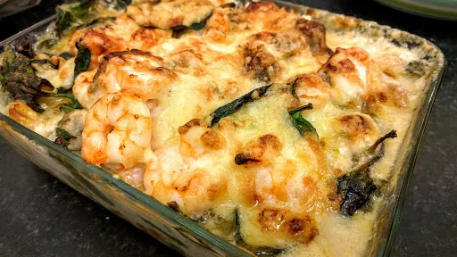

Seafood and spinach pasta
20 mins
Serves 3

Ingredients
- 1 mug fusilli
- 6 pieces frozen spinach, defrosted and drained of most of the water
- 1 mug grated cheddar
- ½ mug grated cheese for sprinkling over the top
- 1 tbsp flour
- 1½ mugs milk
- 1" cube butter
- ¼ tsp paprika
- 2 small pices of salmon steak, cut into chunks
- 10 large prawns
- 2 spring onions
- 4 mushrooms, sliced
Instructions
- Preheat the oven to 180°C. Grease an oven proof dish or individual dishes.
- Boil water in a saucepan for the
pasta1 mug
. Once boiling, cook the pasta1 mug
, drain, then stir in the spinach6 pieces
. Set aside in a bowl until needed.
- Put one mug of grated
cheese½ mug
into a saucepan and add the flour1 tbsp
. Mix evenly. Add the milk1½ mugs
and the butter1" cube
and heat gently. Stir all the time and the sauce will thicken. Add the paprika¼ tsp
and stir.
- Put the
salmon2 small
, prawns10 large
, chopped spring onions2
and mushrooms4
into the cheese½ mug
sauce and stir. Add the cooked pasta1 mug
and spinach6 pieces
. Pour into the casserole dish or individual dishes.
- Sprinkle the ½ mug of
cheese½ mug
on top.
- Bake in the oven for 25 minutes. The top should be browned.
Nosh for graduates
Short Link
Long Link